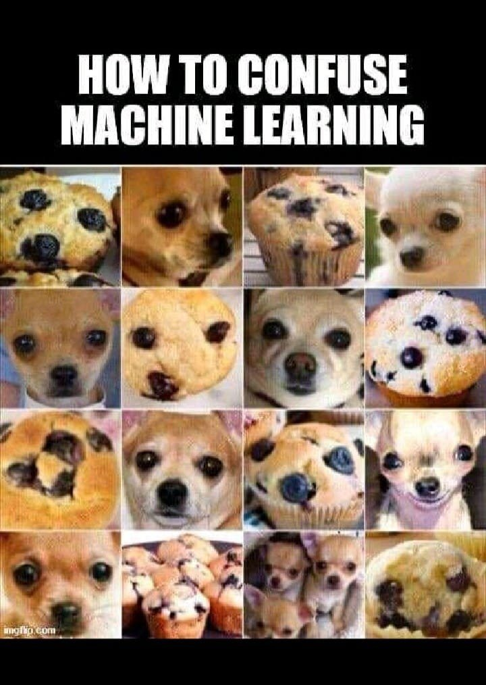
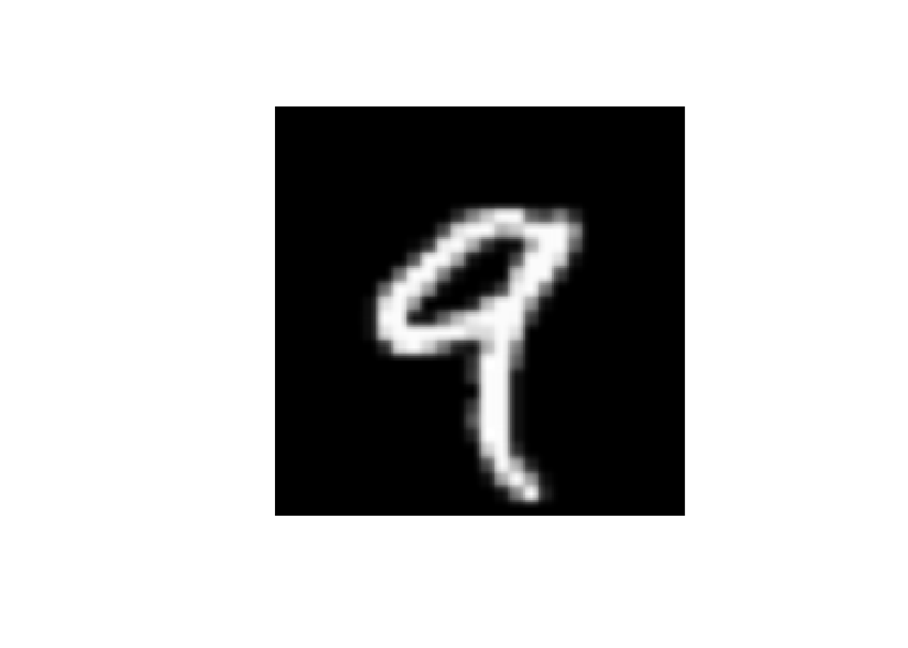

Kod
library(keras)Jak to zostało wspomniane na początku tej książki do automatycznej analizy obrazu wykorzystamy techniki z zakresu uczenia maszynowego, które mieszczą się pod pojęciem głębokiego uczenia (ang. deep learning). Uczenie maszynowe wynika bezpośrednio z pytania: czy komputer mógłby wyjść poza to, co wiemy i samodzielnie nauczyć się, jak wykonać określone zadanie? Czy komputer mógłby nas zaskoczyć? Czy zamiast programistów ręcznie tworzących reguły przetwarzania danych, komputer mógłby automatycznie nauczyć się tych reguł patrząc na dane?

To pytanie otwiera drzwi do nowego paradygmatu programowania. W klasycznym programowaniu, paradygmacie symbolicznej AI, ludzie wprowadzają reguły (program) i dane, które mają być przetwarzane zgodnie z tymi regułami, a następnie otrzymują odpowiedzi (patrz Rysunek 10.1). W przypadku uczenia maszynowego, człowiek wprowadza dane oraz odpowiedzi oczekiwane na podstawie tych danych, a następnie otrzymuje reguły. Reguły te mogą być następnie zastosowane do nowych danych, aby uzyskać oryginalne odpowiedzi.
System uczenia maszynowego jest raczej uczony niż programowany. Przedstawia się mu wiele przykładów związanych z zadaniem, a on znajduje w nich strukturę statystyczną, która w końcu pozwala mu wymyślić reguły automatyzacji zadania. Na przykład, jeśli chciałbyś zautomatyzować zadanie oznaczania zdjęć z wakacji, mógłbyś przedstawić systemowi uczenia maszynowego wiele przykładów zdjęć już oznaczonych przez ludzi, a system nauczyłby się statystycznych reguł kojarzenia konkretnych zdjęć z konkretnymi tagami.
Chociaż uczenie maszynowe zaczęło się rozwijać dopiero w latach 90-tych, szybko stało się najpopularniejszą i odnoszącą największe sukcesy dziedziną AI, a trend ten jest napędzany przez dostępność szybszego sprzętu i większych zbiorów danych. Uczenie maszynowe jest ściśle związane ze statystyką matematyczną, ale różni się od niej na kilka ważnych sposobów. W przeciwieństwie do statystyki, uczenie maszynowe ma tendencję do zajmowania się dużymi, złożonymi zbiorami danych (takimi jak zbiór milionów obrazów, z których każdy składa się z dziesiątek tysięcy pikseli), dla których klasyczna analiza statystyczna byłaby niepraktyczna. W rezultacie, uczenie maszynowe, a zwłaszcza głębokie uczenie, wykazuje stosunkowo mało teorii matematycznej - być może zbyt mało - i jest zorientowane na inżynierię. Jest to praktyczna dyscyplina, w której pomysły są sprawdzane empirycznie znacznie częściej niż teoretycznie.
Na to aby zdefiniować głębokie uczenie i zrozumieć różnicę między głębokim uczeniem a innymi podejściami do uczenia maszynowego, najpierw musimy mieć pewne pojęcie o tym, co robią algorytmy uczenia maszynowego. Właśnie stwierdziliśmy, że uczenie maszynowe odkrywa reguły wykonywania zadania przetwarzania danych, biorąc pod uwagę przykłady tego, co jest oczekiwane na wyjściu. Zatem, aby przeprowadzić uczenie maszynowe, potrzebujemy trzech rzeczy:
Model uczenia maszynowego przekształca dane wejściowe w sensowne dane wyjściowe, a proces ten jest “uczony” przez ekspozycję na znane przykłady danych wejściowych i wyjściowych. Dlatego centralnym problemem w uczeniu maszynowym i głębokim uczeniu jest sensowne przekształcanie danych: innymi słowy, uczenie się użytecznych reprezentacji danych wejściowych - reprezentacji, które przybliżają nas do oczekiwanych wyników. Zanim przejdziemy dalej: co to jest reprezentacja? W gruncie rzeczy jest to inny sposób patrzenia na dane - reprezentacja lub kodowanie danych. Na przykład, kolorowy obraz może być zakodowany w formacie RGB lub w formacie HSV (barwa-nasycenie-wartość): są to dwie różne reprezentacje tych samych danych. Niektóre zadania, które mogą być trudne do rozwiązania przy jednej reprezentacji, mogą stać się łatwe przy drugiej. Na przykład zadanie “wybierz wszystkie czerwone piksele na obrazie” jest prostsze w formacie RBG, natomiast “spraw, by obraz był mniej nasycony” jest prostsze w formacie HSV. Modele uczenia maszynowego polegają na znalezieniu odpowiednich reprezentacji dla danych wejściowych - przekształceń danych, które czynią je bardziej przydatnymi do wykonania zadania, np.zadania klasyfikacji.
Wszystkie algorytmy uczenia maszynowego polegają na automatycznym znajdowaniu takich przekształceń, które zmieniają dane w bardziej użyteczne reprezentacje dla danego zadania. Operacje te mogą być zmianami współrzędnych lub rzutami liniowymi, tłumaczeniami, operacjami nieliniowymi (takimi jak wybierz wszystkie punkty takie, że \(x >0\)) i tak dalej. Algorytmy uczenia maszynowego zazwyczaj nie są kreatywne w znajdowaniu tych przekształceń; po prostu przeszukują wcześniej zdefiniowany zestaw operacji, zwany przestrzenią hipotez.
Tak więc, technicznie rzecz biorąc, uczenie maszynowe polega na poszukiwaniu użytecznych reprezentacji pewnych danych wejściowych, w ramach predefiniowanej przestrzeni możliwości, przy użyciu wskazówek pochodzących z jakiegoś sygnału zwrotnego. Ta prosta idea pozwala na rozwiązywanie niezwykle szerokiego zakresu zadań naturalnych dla człowieka, od rozpoznawania mowy po autonomiczne prowadzenie samochodu.
Głębokie uczenie jest specyficzną dziedziną uczenia maszynowego: nowe podejście do uczenia się reprezentacji z danych, które kładzie nacisk na uczenie się kolejnych warstw coraz bardziej znaczących reprezentacji. Głębokie uczenie nie jest odniesieniem do jakiegokolwiek głębszego zrozumienia osiąganego przez to podejście; raczej oznacza ideę kolejnych warstw reprezentacji. To, ile warstw składa się na model danych, nazywane jest głębokością modelu. Innymi właściwymi nazwami dla tej dziedziny mogłyby być uczenie się reprezentacji warstwowych i uczenie się reprezentacji hierarchicznych. Nowoczesne uczenie głębokie często obejmuje dziesiątki, a nawet setki kolejnych warstw - i wszystkie one są uczone automatycznie na podstawie danych treningowych. Tymczasem inne podejścia do uczenia maszynowego koncentrują się na uczeniu się tylko jednej lub dwóch warstw reprezentacji danych; stąd czasem nazywa się je uczeniem płytkim.
W głębokim uczeniu, te warstwowe reprezentacje są (prawie zawsze) uczone za pomocą modeli zwanych sieciami neuronowymi, zbudowanymi w dosłownych warstwach ułożonych jedna za drugą. Termin sieć neuronowa jest odniesieniem do neurobiologii, jednak mimo że niektóre z głównych koncepcji głębokiego uczenia zostały opracowane częściowo poprzez czerpanie inspiracji z naszego rozumienia mózgu, modele głębokiego uczenia nie są modelami mózgu. Nie ma dowodów na to, że mózg implementuje cokolwiek w rodzaju mechanizmów uczenia się wykorzystywanych w nowoczesnych modelach głębokiego uczenia. Możesz natknąć się na artykuły popularno-naukowe głoszące, że głębokie uczenie działa jak mózg lub było wzorowane na mózgu, ale to nie jest prawda. Byłoby to mylące, aby myśleć o głębokim uczeniu jako w jakikolwiek sposób związanym z neurobiologią. Dla naszych celów, głębokie uczenie jest matematyczną strukturą do uczenia się reprezentacji danych.
Jak wyglądają reprezentacje wyuczone przez algorytm głębokiego uczenia? Przyjrzyjmy się, jak sieć o głębokości kilku warstw (patrz Rysunek 10.2) przekształca obraz cyfry w celu rozpoznania, jaka to cyfra.

Jak widać na Rysunek 10.3, sieć przekształca obraz cyfry w reprezentacje coraz bardziej różniące się od obrazu oryginalnego i coraz bardziej informujące o wyniku końcowym. Można myśleć o sieci głębokiej jak o wielostopniowej operacji destylacji informacji, gdzie informacja przechodzi przez kolejne filtry i wychodzi coraz bardziej oczyszczona (czyli przydatna w odniesieniu do jakiegoś zadania).

Tak właśnie wygląda głębokie uczenie, technicznie rzecz biorąc: jest to wieloetapowy sposób uczenia się reprezentacji danych. To prosty pomysł - ale jak się okazuje, bardzo proste mechanizmy, odpowiednio skalowane, mogą w końcu wyglądać jak magia.
W tym wiemy już, że uczenie maszynowe polega na mapowaniu danych wejściowych (takich jak obrazy) na dane docelowe (takie jak etykieta “kot”), co odbywa się poprzez obserwację wielu przykładów danych wejściowych i danych docelowych. Wiemy też, że głębokie sieci neuronowe wykonują odwzorowanie danych wejściowych na docelowe poprzez głęboką sekwencję prostych transformacji danych (warstwy) i że te transformacje danych są uczone przez ekspozycję na przykłady. Przyjrzyjmy się teraz, jak to uczenie przebiega, konkretnie.
Specyfikacja tego, co warstwa robi ze swoimi danymi wejściowymi, jest przechowywana w wagach warstwy (zwanych wagami synaptycznymi), które w istocie są zbiorem liczb. W sensie technicznym można powiedzieć, że transformacja wykonywana przez warstwę jest sparametryzowana przez jej wagi (patrz Rysunek 10.4). W tym kontekście uczenie oznacza znalezienie zestawu wartości dla wag wszystkich warstw w sieci, tak aby sieć poprawnie odwzorowywała przykładowe wejścia na przypisane im cele. Rzecz w tym, że głęboka sieć neuronowa może zawierać dziesiątki milionów parametrów. Znalezienie poprawnej wartości dla wszystkich z nich może wydawać się trudnym zadaniem, szczególnie biorąc pod uwagę fakt, że zmiana wartości jednego parametru wpłynie na zachowanie wszystkich pozostałych!

Aby coś kontrolować, trzeba najpierw móc to obserwować. Aby kontrolować wyjście sieci neuronowej, musisz być w stanie zmierzyć, jak daleko to wyjście jest od tego, czego się spodziewałeś. Jest to zadanie funkcji straty sieci, zwanej również funkcją celu. Funkcja straty bierze predykcje sieci oraz prawdziwy wynik (to, co chciałeś, aby sieć “wypluła”) i oblicza wynik odległości, ujmując, jak dobrze sieć poradziła sobie z tym konkretnym przykładem (patrz Rysunek 10.5).

Podstawową sztuczką w uczeniu głębokim jest wykorzystanie wyniku jako sygnału zwrotnego do skorygowania wartości wag w kierunku, który obniży wynik straty dla bieżącego przykładu (patrz Rysunek 10.6). Ta korekta jest zadaniem optymalizatora, który implementuje coś, co nazywa się algorytmem wstecznej propagacji (ang. backpropagation): główny algorytm w uczeniu głębokim. W dalszej części wyjaśnimy bardziej szczegółowo, jak działa wsteczna propagacja.

Początkowo wagom sieci przypisane są losowe wartości, więc sieć wykonuje jedynie serię losowych przekształceń. Oczywiście jej wynik jest daleki od tego, jaki powinien być w idealnej sytuacji, a wynik funkcji straty jest bardzo wysoki. Ale z każdym przykładem, który sieć przetwarza, wagi są dostosowywane w prawidłowym kierunku, a wynik strat maleje. Jest to pętla treningowa, która powtarzana odpowiednią ilość razy (zwykle dziesiątki iteracji na tysiącach przykładów) daje wartości wag, które minimalizują funkcję straty. Sieć z minimalną stratą to taka, dla której wyjścia są tak bliskie celom, jak to tylko możliwe - sieć wytrenowana.
Około 2010 roku, mimo że sieci neuronowe były niemal całkowicie odrzucane przez ogół społeczności naukowej, kilka osób wciąż pracujących nad sieciami neuronowymi zaczęło dokonywać ważnych przełomów: grupy Geoffreya Hintona z Uniwersytetu w Toronto, Yoshua Bengio z Uniwersytetu w Montrealu, Yann LeCun z Uniwersytetu Nowojorskiego oraz IDSIA w Szwajcarii.
W 2011 roku Dan Ciresan z IDSIA zaczął wygrywać akademickie konkursy klasyfikacji obrazów za pomocą trenowanych na GPU głębokich sieci neuronowych - był to pierwszy praktyczny sukces nowoczesnego uczenia głębokiego. Jednak przełomowy moment nastąpił w 2012 roku, gdy grupa Hintona wzięła udział w corocznym wyzwaniu ImageNet dotyczącym klasyfikacji obrazów na dużą skalę. Wyzwanie ImageNet było w tamtym czasie wyjątkowo trudne, polegało na klasyfikacji kolorowych obrazów o wysokiej rozdzielczości do 1000 różnych kategorii po przeszkoleniu na 1,4 mln obrazów. W 2011 roku dokładność zwycięskiego modelu, opartego na klasycznym podejściu do widzenia komputerowego, wyniosła zaledwie 74,3%. Następnie, w 2012 roku, zespół kierowany przez Alexa Krizhevsky’ego i wspierany przez Geoffreya Hintona był w stanie osiągnąć dokładność w pierwszej piątce1 na poziomie 83,6% - był to znaczący przełom. Od tego czasu co roku konkurs był zdominowany przez głębokie konwencjonalne sieci neuronowe. W 2015 roku zwycięzca osiągnął dokładność 96,4%, a zadanie klasyfikacji na ImageNet uznano za całkowicie rozwiązany problem.
1 (ang. top 5 accuracy) - oznacza, że wśród 5 kategorii z najwyższym prawdopodobieństwem jest prawdziwa klasa

Od 2012 r. głębokie konwolucyjne sieci neuronowe (CovNets - Convolutional Networks) stały się algorytmem pierwszego wyboru dla wszystkich zadań widzenia komputerowego. Na najważniejszych konferencjach poświęconych widzeniu komputerowemu w 2015 i 2016 r. niemal niemożliwe było znalezienie prezentacji, które w jakiejś formie nie wiązałyby się z CovNets. Jednocześnie głębokie uczenie znalazło zastosowanie w wielu innych typach problemów, takich jak np. przetwarzanie języka naturalnego. W szerokim zakresie zastosowań całkowicie zastąpiło klasyczne modele SVM i drzewa decyzyjne. Na przykład przez kilka lat Europejska Organizacja Badań Jądrowych (CERN), używała metod opartych na drzewach decyzyjnych do analizy danych cząstek z detektora ATLAS w Wielkim Zderzaczu Hadronów (LHC); ale CERN ostatecznie przeszedł na głębokie sieci neuronowe oparte na Keras ze względu na ich wyższą wydajność i łatwość szkolenia na dużych zbiorach danych.
Podstawowym powodem, dla którego uczenie głębokie odniosło sukces tak szybko, jest to, że oferowało lepszą wydajność w wielu problemach. Ale to nie jest jedyny powód. Głębokie uczenie ułatwia również rozwiązywanie problemów, ponieważ całkowicie automatyzuje to, co kiedyś było najbardziej kluczowym krokiem w procesie uczenia maszynowego: inżynierię cech.
Poprzednie techniki uczenia maszynowego - uczenie głębokie - polegały jedynie na przekształceniu danych wejściowych w jedną lub dwie kolejne przestrzenie reprezentacji, zwykle poprzez proste przekształcenia, takie jak wielowymiarowe projekcje nieliniowe (SVM) lub drzewa decyzyjne. Jednak wyrafinowane reprezentacje wymagane przez złożone problemy zazwyczaj nie mogą być realizowane przez wspomniane techniki. W związku z tym, ludzie musieli zadać sobie wiele trudu, aby uczynić początkowe dane wejściowe bardziej podatnymi na przetwarzanie przez te metody: to znaczy, musieli ręcznie oparcować dobre warstwy reprezentacji dla swoich danych. Nazywa się to inżynierią cech. Uczenie głębokie całkowicie automatyzuje ten krok: w przypadku uczenia głębokiego, uczysz się wszystkich cech w jednym przejściu i nie musisz ich samodzielnie opracowywać. To znacznie uprościło przepływy pracy związane z uczeniem maszynowym, często zastępując skomplikowane, wieloetapowe potoki jednym, prostym, kompleksowym modelem uczenia głębokiego.
Można zapytać, skoro sednem sprawy jest posiadanie wielu kolejnych warstw reprezentacji, to czy płytkie metody mogą być stosowane wielokrotnie, aby emulować efekty głębokiego uczenia? W praktyce, korzyść z zastosowania kilku metod płytkiego uczenia szybko maleje, ponieważ optymalna pierwsza warstwa reprezentacji w modelu trójwarstwowym nie jest optymalną pierwszą warstwą w modelu jedno- lub dwuwarstwowym. To, co jest przełomowe w uczeniu głębokim, to fakt, że pozwala ono modelowi uczyć się wszystkich warstw reprezentacji wspólnie, w tym samym czasie, a nie po kolei (zachłannie). Dzięki wspólnemu uczeniu cech, gdy model dostosowuje jedną ze swoich wewnętrznych cech, wszystkie inne cechy, które od niej zależą, automatycznie dostosowują się do tej zmiany, bez konieczności interwencji człowieka. Wszystko jest nadzorowane przez pojedynczy sygnał zwrotny: każda zmiana w modelu służy celowi końcowemu. Jest to znacznie potężniejsze niż składanie płytkich modeli, ponieważ pozwala na uczenie się złożonych, abstrakcyjnych reprezentacji poprzez rozbicie ich na długie serie pośrednich warstw; każda warstwa jest tylko prostym przekształceniem w stosunku do poprzedniej.
Są to dwie zasadnicze cechy tego, jak głębokie uczenie uczy się z danych: przyrostowy, warstwa po warstwie sposób, w jaki korygowane są coraz bardziej złożone reprezentacje, oraz fakt, że te pośrednie, przyrostowe reprezentacje są uczone wspólnie, a każda warstwa jest aktualizowana, aby podążać zarówno za potrzebami reprezentacyjnymi warstwy powyżej, jak i potrzebami warstwy poniżej. Razem, te dwie właściwości sprawiły, że głębokie uczenie jest znacznie bardziej skuteczne niż poprzednie podejścia do uczenia maszynowego.
Świetnym sposobem na poznanie aktualnego krajobrazu algorytmów i narzędzi uczenia maszynowego jest przyjrzenie się konkursom uczenia maszynowego na Kaggle. Dzięki wysoce konkurencyjnemu środowisku (niektóre konkursy mają tysiące uczestników i milionowe nagrody) i szerokiej gamie problemów uczenia maszynowego, Kaggle oferuje realistyczny sposób oceny tego, co działa, a co nie. Jaki więc rodzaj algorytmu niezawodnie wygrywa konkursy? Z jakich narzędzi korzystają najlepsi uczestnicy?
W 2016 roku Kaggle został zdominowany przez dwa podejścia: gradient boosting machines i deep learning. Konkretnie, gradient boosting jest używany do problemów, w których dostępne są ustrukturyzowane dane, podczas gdy głębokie uczenie jest używane do problemów percepcyjnych, takich jak klasyfikacja obrazów. Zwolennicy tego pierwszego rozwiązania prawie zawsze korzystają ze znakomitej biblioteki XGBoost. Tymczasem większość uczestników Kaggle wykorzystujących uczenie głębokie używa biblioteki Keras, ze względu na jej łatwość użycia i elastyczność. Zarówno XGBoost, jak i Keras wspierają dwa najpopularniejsze języki data science: R i Python.
W latach 1990-2010 procesory dostępne na rynku stały się szybsze o około 5000 razy. W rezultacie, obecnie możliwe jest uruchomienie małych modeli głębokiego uczenia na laptopie, podczas gdy 25 lat temu byłoby to niewykonalne.
Jednak typowe modele głębokiego uczenia wykorzystywane w wizji komputerowej lub rozpoznawaniu mowy wymagają mocy obliczeniowej o kilka rzędów wielkości większej niż ta, którą może zapewnić laptop. Przez całą dekadę XXI wieku firmy takie jak NVIDIA i AMD inwestowały miliardy dolarów w rozwój szybkich, równoległych układów (procesorów graficznych [GPU]), które napędzały grafikę w coraz bardziej fotorealistycznych grach wideo - tanich, osobistych komputerów zaprojektowanych do renderowania złożonych scen 3D na ekranie w czasie rzeczywistym. Inwestycja ta przyniosła korzyści społeczności naukowej, gdy w 2007 roku NVIDIA wprowadziła CUDA (https://developer.nvidia.com/about-cuda), interfejs programistyczny dla swojej linii układów GPU. Niewielka liczba procesorów graficznych zaczęła zastępować klastry CPU w różnych złożonych zadaniach, począwszy od modelowania w fizyce. Głębokie sieci neuronowe, składające się głównie z wielu mnożeń macierzy, są również wysoce paralelizowalne i około 2011 roku niektórzy badacze zaczęli pisać implementacje CUDA sieci neuronowych - jednymi z pierwszych byli Dan Ciresan(Ciresan i in., b.d.) i Alex Krizhevsky(Krizhevsky, Sutskever, i Hinton 2017).
Stało się tak, że rynek gier dofinansował superkomputery dla następnej generacji aplikacji sztucznej inteligencji. Czasami wielkie rzeczy zaczynają się do zabawy 🙈. Dziś NVIDIA Titan X, procesor graficzny dla graczy, który kosztował 1000 dolarów pod koniec 2015 roku, może zapewnić szczytową wydajność 6,6 TLOPS w pojedynczej precyzji: to znaczy 6,6 biliona operacji float32 na sekundę. To około 350 razy więcej niż to, co można wyciągnąć z nowoczesnego laptopa. Na Tytanie X trenowanie modelu ImageNet, który kilka lat temu wygrałby konkurs ILSVRC, zajmuje zaledwie kilka dni. Tymczasem duże firmy trenują modele głębokiego uczenia na klastrach składających się z setek jednostek GPU, takich jak NVIDIA K80, opracowanych specjalnie na potrzeby głębokiego uczenia. Sama moc obliczeniowa takich klastrów jest czymś, co nigdy nie byłoby możliwe bez nowoczesnych procesorów graficznych.
Co więcej, branża głębokiego uczenia zaczyna wychodzić poza procesory graficzne i inwestuje w coraz bardziej wyspecjalizowane, wydajne układy do głębokiego uczenia. W 2016 roku, na corocznej konwencji I/O, Google ujawniło swój projekt procesora tensorowego (TPU): nowy układ scalony opracowany od podstaw w celu uruchamiania głębokich sieci neuronowych, który jest podobno 10 razy szybszy i znacznie bardziej energooszczędny niż topowe układy GPU.
AI jest czasem zapowiadana jako nowa rewolucja przemysłowa. Jeśli głębokie uczenie jest maszyną parową tej rewolucji, to dane są jej węglem: surowcem, który zasila nasze inteligentne maszyny, bez którego nic nie byłoby możliwe. Jeśli chodzi o dane, to oprócz wykładniczego postępu w dziedzinie sprzętu do przechowywania danych w ciągu ostatnich 20 lat (zgodnie z prawem Moore’a2), kluczowym czynnikiem był rozwój Internetu, dzięki któremu możliwe stało się gromadzenie i rozpowszechnianie bardzo dużych zbiorów danych na potrzeby uczenia maszynowego. Obecnie duże firmy pracują z zestawami danych obrazowych, zestawami danych wideo i zestawami danych w języku naturalnym, które nie mogłyby zostać zebrane bez Internetu. Przykładowo, generowane przez użytkowników tagi do obrazów w serwisie Flickr są skarbnicą danych dla wizji komputerowej. Podobnie jest z filmami z YouTube. A Wikipedia jest kluczowym zbiorem danych dla przetwarzania języka naturalnego.
2 mówi o tym, że liczba tranzystorów w procesorach rośnie wykładniczo
Jeśli jest jakiś zbiór danych, który stał się katalizatorem rozwoju głębokiego uczenia, to jest to zbiór danych ImageNet, składający się z 1,4 miliona obrazów, które zostały ręcznie przypisane do 1000 kategorii obrazów (1 kategoria na obraz). Jednak to, co czyni ImageNet wyjątkowym, to nie tylko jego duży rozmiar, ale także coroczny konkurs z nim związany. Jak pokazuje Kaggle od 2010 roku, publiczne konkursy są doskonałym sposobem motywowania naukowców i inżynierów do przekraczania granic. Posiadanie wspólnych benchmarków, które badacze starają się pokonać, bardzo pomogło w niedawnym rozwoju uczenia głębokiego.
Oprócz sprzętu i danych, aż do późnych lat 2000 brakowało nam niezawodnego sposobu trenowania bardzo głębokich sieci neuronowych. W rezultacie sieci neuronowe były wciąż dość płytkie, wykorzystując tylko jedną lub dwie warstwy reprezentacji; nie były więc w stanie zabłysnąć w porównaniu z bardziej wyrafinowanymi płytkimi metodami, takimi jak SVM czy lasy losowe. Kluczowym problemem była propagacja gradientu przez głębokie stosy warstw. Sygnał zwrotny używany do trenowania sieci neuronowych zanikał wraz ze wzrostem liczby warstw.
Zmieniło się to około 2009-2010 roku wraz z pojawieniem się kilku prostych, ale ważnych ulepszeń algorytmicznych, które pozwoliły na lepszą propagację gradientu:
Dopiero gdy te ulepszenia zaczęły umożliwiać trenowanie modeli z 10 lub więcej warstwami, uczenie głębokie zaczęło błyszczeć. Wreszcie w latach 2014, 2015 i 2016 odkryto jeszcze bardziej zaawansowane sposoby wspomagania propagacji gradientu, takie jak normalizacja partii (ang. batch normalization), połączenia resztkowe (ang. residual connections) czy konwolucje separowalne w głąb (ang. depthwise separable convolutions). Dziś możemy trenować od podstaw modele, które mają tysiące warstw głębokości.
Czy jest coś szczególnego w głębokich sieciach neuronowych, co sprawia, że są one “właściwym” podejściem dla firm, w które należy inwestować i dla naukowców, którzy chcą się nimi zainteresować? Czy może głębokie uczenie się jest tylko modą, która może nie przetrwać? Czy za 20 lat nadal będziemy używać głębokich sieci neuronowych?
Krótka odpowiedź brzmi: tak 🙏 - głębokie uczenie ma kilka właściwości, które uzasadniają jego status jako rewolucji AI. Być może za dwie dekady nie będziemy używać sieci neuronowych, ale cokolwiek będziemy używać, będzie bezpośrednio dziedziczyć po nowoczesnym głębokim uczeniu i jego podstawowych koncepcjach. Najważniejsze właściwości można ogólnie podzielić na trzy kategorie:
Zrozumienie głębokiego uczenia wymaga znajomości wielu prostych pojęć matematycznych: tensorów, operacji na tensorach, różniczkowania, spadku gradientu itp. Naszym celem w tym rozdziale będzie zbudowanie intuicji na temat tych pojęć bez nadmiernego zagłębiania się w technikę. W szczególności, będziemy unikać notacji matematycznej, która może być drażniąca dla osób nieposiadających żadnego wykształcenia matematycznego, a nie jest niezbędna do dobrego wytłumaczenia.
Aby dodać trochę kontekstu dla tensorów i spadku gradientu, rozpoczniemy podrozdział od praktycznego przykładu sieci neuronowej. Następnie przejdziemy przez każde nowe pojęcie, które zostało wprowadzone, punkt po punkcie. Pamiętaj, że pojęcia te będą niezbędne do zrozumienia praktycznych przykładów, które pojawią się w kolejnych rozdziałach!
Przyjrzyjmy się konkretnemu przykładowi sieci neuronowej, która wykorzystuje pakiet keras do nauki klasyfikacji ręcznie pisanych cyfr.
library(keras)Problemem, który postaramy się rozwiązać jest klasyfikacja obrazów pisma ręcznego w skali szarości (28 pikseli na 28 pikseli) do 10 kategorii (od 0 do 9). Użyjemy zestawu danych MNIST, klasycznego zestawu danych w społeczności ML, który istnieje prawie tak długo jak sama dziedzina i jest intensywnie badany. Jest to zestaw 60 000 obrazów treningowych oraz 10 000 obrazów testowych, zebranych przez National Institute of Standards and Technology (NIST w MNIST) w latach 80. Możesz myśleć o “rozwiązywaniu” MNIST jako o “Hello World” głębokiego uczenia - to jest to, co robisz, aby zweryfikować, że twoje algorytmy działają zgodnie z oczekiwaniami. Gdy staniesz się praktykiem uczenia maszynowego, zobaczysz, że MNIST pojawia się raz za razem, w pracach naukowych, wpisach na blogach i tak dalej. Kilka próbek MNIST można zobaczyć na Rysunek 10.7.

W uczeniu maszynowym kategoria w problemie klasyfikacyjnym nazywana jest klasą. Punkty danych są nazywane próbkami. Klasa związana z konkretną próbką nazywana jest etykietą (ang. label).
Zbiór danych MNIST jest wstępnie załadowany do keras w postaci list train i test, z których każda zawiera zestaw obrazów (x) i związanych z nimi etykiet (y):
mnist <- dataset_mnist()
train_images <- mnist$train$x
train_labels <- mnist$train$y
test_images <- mnist$test$x
test_labels <- mnist$test$ytrain_images i train_labels tworzą zbiór treningowy, czyli dane, na podstawie których model będzie się uczył. Model będzie następnie testowany na zbiorze testowym, test_images i test_labels . Obrazy są zakodowane jako tablice 3D, a etykiety to tablica 1D z cyframi od 0 do 9. Pomiędzy obrazami i etykietami istnieje korespondencja jeden do jednego.
str(train_images) int [1:60000, 1:28, 1:28] 0 0 0 0 0 0 0 0 0 0 ...str(train_labels) int [1:60000(1d)] 5 0 4 1 9 2 1 3 1 4 ...str(test_images) int [1:10000, 1:28, 1:28] 0 0 0 0 0 0 0 0 0 0 ...str(test_labels) int [1:10000(1d)] 7 2 1 0 4 1 4 9 5 9 ...Przepływ pracy (ang. workflow) będzie następujący: najpierw podamy sieci neuronowej dane treningowe, train_images i train_labels. Następnie sieć nauczy się kojarzyć obrazy i etykiety. Na koniec poprosimy sieć o stworzenie przewidywań dla test_images i sprawdzimy, czy te przewidywania pasują do etykiet z test_labels.
network <- keras_model_sequential() %>%
layer_dense(units = 512, activation = "relu", input_shape = c(28 * 28)) %>%
layer_dense(units = 10, activation = "softmax")Podstawowym elementem konstrukcyjnym sieci neuronowych jest warstwa, moduł przetwarzania danych, o którym można myśleć jak o filtrze dla danych. Niektóre dane przychodzą i wychodzą w bardziej użytecznej formie. W szczególności, warstwy wyodrębniają reprezentacje z danych, które są do nich wprowadzane - miejmy nadzieję, że reprezentacje, które są bardziej znaczące dla danego problemu. Większość głębokiego uczenia polega na łączeniu prostych warstw, które implementują formę stopniowej destylacji danych. Model głębokiego uczenia jest jak sito do przetwarzania danych, złożone z szeregu coraz bardziej wyrafinowanych filtrów danych - warstw.

Nasza sieć składa się z dwóch warstw, które są gęsto połączonymi (zwanymi też w pełni połączonymi - ang. fully connected) warstwami neuronowymi. Druga (i ostatnia) warstwa jest 10-kierunkową warstwą softmax, co oznacza, że zwróci tablicę 10 wyników prawdopodobieństwa (sumujących się do 1). Każdy wynik będzie oznaczał prawdopodobieństwo, że aktualny obraz cyfry należy do jednej z naszych 10 klas cyfr.
Aby sieć była gotowa do treningu, musimy wybrać jeszcze trzy rzeczy, w ramach kroku kompilacji:
Dokładne przeznaczenie funkcji straty i optymalizatora zostanie wyjaśnione w kolejnych rozdziałach.
network %>% compile(
optimizer = "rmsprop",
loss = "categorical_crossentropy",
metrics = c("accuracy")
)Zauważ, że funkcja compile() modyfikuje sieć na bieżąco (zamiast zwracać nowy obiekt sieci, co jest bardziej typowe dla R). Powód tego opiszemy, gdy powrócimy do przykładu w dalszej części rozdziału.
Przed treningiem wstępnie przetworzymy dane, zmieniając ich kształt na taki, jakiego oczekuje sieć, i skalując je tak, by wszystkie wartości mieściły się w przedziale [0, 1]. Poprzednio nasze obrazy treningowe, na przykład, były przechowywane w tablicy o kształcie (60000, 28, 28) typu integer z wartościami w przedziale [0, 255]. Przekształcamy go w podwójną tablicę kształtu (60000, 28 * 28) z wartościami w przedziale [0,1].
train_images <- array_reshape(train_images, c(60000, 28 * 28))
train_images <- train_images / 255
test_images <- array_reshape(test_images, c(10000, 28 * 28))
test_images <- test_images / 255Zauważ, że używamy funkcji array_reshape() zamiast funkcji dim() do zmiany kształtu tablicy. Powód tego omówimy później, kiedy będziemy mówić o przekształcaniu tensorów. Musimy również zakodować etykiety w sposób kategoryczny.
train_labels <- to_categorical(train_labels)
test_labels <- to_categorical(test_labels)Teraz jesteśmy gotowi do trenowania sieci, co w keras odbywa się poprzez wywołanie metody fit sieci - dopasowujemy model do danych treningowych:
network %>% fit(train_images, train_labels, epochs = 5, batch_size = 128)Podczas treningu wyświetlane są dwie wielkości: strata sieci na danych treningowych oraz dokładność sieci na danych treningowych. Szybko osiągamy dokładność 0,989 (98,9%) na danych treningowych. Teraz sprawdźmy, czy model dobrze radzi sobie również na zbiorze testowym:
metrics <- network %>% evaluate(test_images, test_labels)
metrics loss accuracy
0.07629414 0.97790003 Dokładność zestawu testowego okazuje się wynosić 97,8% - to sporo mniej niż dokładność zestawu treningowego. Ta różnica między dokładnością treningu a dokładnością testu jest przykładem nadmiernego dopasowania (fakt, że modele uczenia maszynowego mają tendencję do osiągania gorszych wyników na nowych danych niż na danych treningowych). Wygenerujmy przewidywania dla pierwszych 10 próbek zbioru testowego:
network %>% predict(test_images[1:10,]) |> k_argmax()tf.Tensor([7 2 1 0 4 1 4 9 5 9], shape=(10), dtype=int64)Na tym kończymy nasz pierwszy przykład - właśnie zobaczyłeś, jak można zbudować i wytrenować sieć neuronową do klasyfikacji pisma ręcznego w mniej niż 20 liniach kodu R. W następnym rozdziale omówimy szczegółowo każdy element, który użyliśmy i wyjaśnimy, co on robi. Dowiesz się o tensorach, obiektach przechowujących dane w sieci; o operacjach na tensorach, z których składają się warstwy; oraz o spadku gradientu, który pozwala sieci uczyć się na przykładach treningowych.
W poprzednim przykładzie zaczynaliśmy od danych przechowywanych w wielowymiarowych tablicach, zwanych również tensorami. Wszystkie obecne systemy uczenia maszynowego używają tensorów jako podstawowej struktury danych. Tensory są fundamentalne dla tej dziedziny - tak fundamentalne, że Google’s TensorFlow został nazwany na ich cześć. Czym więc jest tensor?
Tensory są uogólnieniem wektorów i macierzy na dowolną liczbę wymiarów (zauważ, że w kontekście tensorów “wymiar” jest często nazywany “osią”). W R wektory są używane do tworzenia i manipulowania tensorami 1D, a matryce są używane do tensorów 2D. Dla wymiarów wyższego rzędu używane są obiekty tablicowe (które obsługują dowolną liczbę wymiarów).
Tensor, który zawiera tylko jedną liczbę nazywany jest skalarem (lub tensorem skalarnym, lub tensorem 0-wymiarowym, lub tensorem 0D). Chociaż R nie ma typu danych do reprezentowania skalarów (wszystkie obiekty numeryczne są wektorami, macierzami lub tablicami), wektor R, który ma zawsze długość 1, jest koncepcyjnie podobny do skalara.
Jednowymiarowa tablica liczb nazywana jest wektorem lub tensorem 1D. Mówi się, że tensor 1D ma dokładnie jedną oś. Możemy przekonwertować wektor R na obiekt tablicowy (array), aby sprawdzić jego wymiary:
x <- c(12, 3, 6, 14, 10)
str(x) num [1:5] 12 3 6 14 10dim(as.array(x))[1] 5Wektor ten ma pięć wpisów i dlatego nazywany jest wektorem 5-wymiarowym. Nie należy mylić wektora 5D z tensorem 5D! Wektor 5D ma tylko jedną oś i ma pięć wymiarów wzdłuż swojej osi, podczas gdy tensor 5D ma pięć osi (i może mieć dowolną liczbę wymiarów wzdłuż każdej osi). Wymiarowość może oznaczać albo liczbę wpisów wzdłuż konkretnej osi (jak w przypadku naszego wektora 5D), albo liczbę osi w tensorze (jak tensor 5D), co może być czasem mylące. W tym drugim przypadku technicznie poprawniej jest mówić o tensorze rzędu 5 (ranga tensora to liczba osi), ale niejednoznaczny zapis tensor 5D jest powszechny niezależnie od tego.
Dwuwymiarowa tablica liczb to macierz, czyli tensor 2D. Macierz ma dwie osie (często nazywane wierszami i kolumnami). Możesz wizualnie zinterpretować macierz jako prostokątną siatkę liczb:
x <- matrix(rep(0, 3*5), nrow = 3, ncol = 5)
x [,1] [,2] [,3] [,4] [,5]
[1,] 0 0 0 0 0
[2,] 0 0 0 0 0
[3,] 0 0 0 0 0dim(x)[1] 3 5Jeśli spakujemy takie macierze do nowej tablicy, otrzymamy tensor 3D, który możemy wizualnie zinterpretować jako sześcian liczb:
x <- array(rep(0, 2*3*2), dim = c(2,3,2))
str(x) num [1:2, 1:3, 1:2] 0 0 0 0 0 0 0 0 0 0 ...dim(x)[1] 2 3 2Pakując tensory 3D w tablicy, możesz stworzyć tensor 4D i tak dalej. W głębokim uczeniu się, generalnie będziesz manipulować tensorami, które są 0D do 4D, a tensory 5D pojawią się, jeśli będziesz przetwarzać dane wideo.
Tensor jest określony przez trzy kluczowe atrybuty:
dim().3 float - czyli liczba rzeczywista
4 typu character
Aby to skonkretyzować, spójrzmy na dane, które przetwarzaliśmy w przykładzie MNIST. Najpierw ładujemy zbiór danych MNIST:
train_images <- mnist$train$x
train_labels <- mnist$train$y
test_images <- mnist$test$x
test_labels <- mnist$test$y
length(dim(train_images)) # trzy osie[1] 3dim(train_images) # kształt[1] 60000 28 28typeof(train_images) # typ danych[1] "integer"Jak więc widać jest to tensor 3D liczb całkowitych. Dokładniej, jest to tablica 60000 macierzy 28 × 28 liczb całkowitych. Każda taka macierz jest obrazem w skali szarości, o współczynnikach od 0 do 255. Wykreślmy piątą cyfrę w tym tensorze 3D:
digit <- train_images[5,,]
plot(as.raster(digit, max = 255))
W poprzednim przykładzie wybraliśmy konkretną cyfrę wzdłuż pierwszej osi za pomocą składni train_images[i,,]. Wybieranie konkretnych elementów w tensorze nazywa się tensor slicing. Przyjrzyjmy się operacjom tensor slicing, które można wykonać na tablicach R. Poniżej wybrano cyfry od #10 do #99 i umieszczono je w tablicy o kształcie (90, 28, 28):
my_slice <- train_images[10:99,,]
dim(my_slice)[1] 90 28 28Generalnie, możesz wybrać pomiędzy dwoma dowolnymi indeksami wzdłuż każdej osi tensora. Na przykład, aby wybrać 14 × 14 pikseli w prawym dolnym rogu wszystkich obrazów, użyj:
my_slice <- train_images[, 15:28, 15:28]Generalnie, pierwszą osią we wszystkich tensorach danych, z którymi zetkniesz się w głębokim uczeniu, będzie oś próbek (czasami nazywana wymiarem próbek). W przykładzie MNIST, próbki to obrazy cyfr. Ponadto, modele głębokiego uczenia nie przetwarzają całego zbioru danych na raz, ale raczej dzielą dane na małe partie (ang. batch). Konkretnie, oto jedna partia naszych cyfr MNIST, o rozmiarze partii 128:
batch <- train_images[1:128,,]Gdy rozważamy tensor partii, pierwsza oś nazywana jest osią partii lub wymiarem partii. Jest to termin, który często spotkasz podczas korzystania z keras i innych bibliotek uczenia głębokiego.
Uściślijmy tensory danych za pomocą kilku przykładów podobnych do tego, co napotkasz później. Dane, którymi będziesz manipulował, prawie zawsze będą należały do jednej z następujących kategorii:
Dane wektorowe są najczęściej spotykanym przykładem formatu danych. W takim zbiorze danych każdy pojedynczy punkt danych może być zakodowany jako wektor, a więc partia danych będzie zakodowana jako tensor 2D (czyli tablica wektorów), gdzie pierwsza oś jest osią próbek, a druga osią cech. Przyjrzyjmy się dwóm przykładom:
(100000, 3).(500, 20000).Gdy w danych ważny się czas (lub kolejność sekwencji), sensowne jest przechowywanie ich w tensorze 3D z wyraźną osią czasu. Każda próbka może być zakodowana jako ciąg wektorów (tensor 2D), a zatem partia danych będzie zakodowana jako tensor 3D (patrz Rysunek 10.8).

Oś czasu jest zawsze drugą osią, zgodnie z konwencją. Przyjrzyjmy się kilku przykładom:
(390, 3) (jest 390 minut w dniu handlu), a 250 dni danych może być przechowywanych w tensorze 3D o kształcie (250, 390, 3). W tym przypadku każda próbka to jeden dzień danych.(140, 128), a zbiór danych 1 miliona tweetów może być przechowywany w tensorze o kształcie (1000000, 140, 128).Obrazy mają zazwyczaj trzy wymiary: wysokość, szerokość i głębię koloru. Choć obrazy w skali szarości (jak nasze cyfry MNIST) mają tylko jeden kanał koloru i mogłyby być przechowywane w tensorach 2D, to konwencjonalnie tensory obrazów są zawsze trójwymiarowe, z jednowymiarowym kanałem koloru dla obrazów w skali szarości. Partia 128 obrazów w skali szarości o rozmiarach 256 × 256 mogłaby więc być przechowywana w tensorze o kształcie (128, 256, 256, 1), a partia 128 obrazów kolorowych - w tensorze o kształcie (128, 256, 256, 3) (patrz Rysunek 10.9).

Istnieją dwie konwencje dla kształtów tensorów obrazów: konwencja channels-last (używana przez TensorFlow) i konwencja channels-first (używana przez Theano). Framework uczenia maszynowego TensorFlow, od Google, umieszcza oś głębokości koloru na końcu: (sample, height, width, color_depth). Tymczasem Theano umieszcza oś głębi koloru zaraz po osi wsadowej: (sample, color_depth, height, width). Keras zapewniają wsparcie dla obu formatów.
Dane wideo są jednym z niewielu typów danych ze świata rzeczywistego, dla których będziesz potrzebował tensorów 5D. Wideo może być rozumiane jako sekwencja klatek, z których każda jest obrazem kolorowym. Ponieważ każda klatka może być przechowywana w tensorze 3D (wysokość, szerokość, głębokość koloru), sekwencja klatek może być przechowywana w tensorze 4D (klatki, wysokość, szerokość, głębokość koloru), a zatem partia różnych filmów może być przechowywana w tensorze 5D o kształcie (próbki, klatki, wysokość, szerokość, głębokość koloru).
Na przykład 60-sekundowy klip wideo YouTube o wymiarach 256 × 144, próbkowany z prędkością 4 klatek na sekundę, miałby 240 klatek. Partia czterech takich klipów wideo byłaby przechowywana w tensorze o kształcie (4, 240, 256, 144, 3). To w sumie 106168320 wartości! Jeśli typ danych tensora to double, to każda wartość jest przechowywana w 64 bitach, więc tensor reprezentowałby 810 MB. Sporo 😱! Filmy, które spotykasz w prawdziwym życiu są znacznie lżejsze, ponieważ nie są przechowywane w float32 i zazwyczaj są silnie skompresowane (jak w formacie MPEG).
Podobnie jak każdy program komputerowy może być ostatecznie zredukowany do małego zestawu operacji binarnych na wejściach binarnych (AND, OR, NOR, i tak dalej), wszystkie transformacje uczone przez głębokie sieci neuronowe mogą być zredukowane do garści operacji tensorowych stosowanych do tensorów danych liczbowych. Na przykład, możliwe jest dodawanie tensorów, mnożenie tensorów i tak dalej. W naszym początkowym przykładzie budowaliśmy naszą sieć poprzez układanie gęstych warstw jedna na drugiej. Instancja warstwy wygląda tak:
layer_dense(units = 512, activation = "relu")Warstwa ta może być interpretowana jako funkcja, która przyjmuje na wejście tensor 2D i zwraca inny tensor 2D - nową reprezentację tensora wejściowego. Można ją też przedstawić inaczej (gdzie W jest tensorem 2D, a b jest wektorem):
# nie wykonuj
output = relu(dot(W, input) + b)Mamy tu trzy operacje na tensorach: iloczyn (dot) między tensorem wejściowym a tensorem W, dodawanie (+) między wynikowym tensorem 2D wektorem b i wreszcie operację relu, gdzie relu(x) to max(x, 0).
Operacja relu i dodawanie są operacjami typu element-wise: operacjami, które są stosowane niezależnie do każdego wpisu w rozważanych tensorach. Oznacza to, że operacje te są bardzo podatne na wektoryzacje. W praktyce, gdy mamy do czynienia z tablicami R, operacje te są dostępne jako dobrze zoptymalizowane wbudowane funkcje R, które same delegują ciężką pracę do BLAS (Basic Linear Algebra Subprograms). BLAS to niskopoziomowe, wysoce wektoryzowalne, wydajne procedury manipulacji tensorami, zwykle zaimplementowane w Fortranie lub C.
Operacje na tensorach można wykonywać również wtedy, gdy są one innych wymiarów. Przykładowo:
# x is a tensor of random values with shape (64, 3, 32, 10)
x <- array(round(runif(1000, 0, 9)), dim = c(64, 3, 32, 10))
str(x) num [1:64, 1:3, 1:32, 1:10] 3 7 2 3 5 6 4 8 3 8 ...# y is a tensor of 5s of shape (32, 10)
y <- array(5, dim = c(32, 10))
str(y) num [1:32, 1:10] 5 5 5 5 5 5 5 5 5 5 ...# The output z has shape (64, 3, 32, 10) like x
z <- sweep(x, c(3, 4), y, pmax)
str(z) num [1:64, 1:3, 1:32, 1:10] 5 7 5 5 5 6 5 8 5 8 ...Operacja dot, zwana również iloczynem tensorowym jest najczęściej spotykaną, najbardziej użyteczną operacją na tensorach. W przeciwieństwie do operacji element-wise, łączy ona wpisy w tensorach wejściowych. Iloczyny tensorowe wykorzystują operator %*%. Zauważ, że gdy tylko jeden z dwóch tensorów ma więcej niż jeden wymiar, %*% nie jest symetryczny, czyli że x %*% y nie jest taki sam jak y %*% x.

Trzecim bardzo ważnym rodzajem operacji na tensorach jest przekształcanie tensorów. Chociaż nie było ono używane w gęstych warstwach w naszym pierwszym przykładzie sieci neuronowej, używaliśmy go, gdy wstępnie przetwarzaliśmy dane o cyfrach przed wprowadzeniem ich do naszej sieci:
train_images <- mnist$train$x
str(train_images) int [1:60000, 1:28, 1:28] 0 0 0 0 0 0 0 0 0 0 ...train_images <- array_reshape(train_images, c(60000, 28 * 28))
str(train_images) int [1:60000, 1:784] 0 0 0 0 0 0 0 0 0 0 ...Przekształcenie tensora oznacza zmianę rozmieszczenia jego wierszy i kolumn tak, by pasowały do docelowego kształtu. Oczywiście, przekształcony tensor ma taką samą całkowitą liczbę współczynników jak tensor początkowy.
x <- matrix(c(0, 1,
2, 3,
4, 5),
nrow = 3, ncol = 2, byrow = TRUE)
x [,1] [,2]
[1,] 0 1
[2,] 2 3
[3,] 4 5x <- array_reshape(x, dim = c(6, 1))
x [,1]
[1,] 0
[2,] 1
[3,] 2
[4,] 3
[5,] 4
[6,] 5x <- array_reshape(x, dim = c(2, 3))
x [,1] [,2] [,3]
[1,] 0 1 2
[2,] 3 4 5Szczególnym przypadkiem przekształcenia, który jest powszechnie spotykany, jest transpozycja.
Jak widziałeś wyżej, każda warstwa neuronowa z naszego pierwszego przykładu sieci przekształca swoje dane wejściowe w następujący sposób:
output = relu(dot(input, W)+b)W tym wyrażeniu W i b są tensorami będącymi atrybutami warstwy. Nazywamy je wagami lub parametrami trenowanymi warstwy (odpowiednio atrybuty kernel i bias). Wagi te zawierają informacje wyuczone przez sieć w wyniku ekspozycji na dane treningowe.
Początkowo te macierze wag są wypełnione małymi losowymi wartościami (krok zwany inicjalizacją losową). Oczywiście nie ma powodu, by oczekiwać, że relu(dot(W, input) + b), gdy W i b są losowe, da jakąkolwiek użyteczną reprezentację. Następnym krokiem jest stopniowe dostosowanie tych wag, w oparciu o sygnał zwrotny. To stopniowe dopasowywanie, zwane również treningiem, jest w zasadzie nauką, o którą chodzi w uczeniu modeli.
Dzieje się to w ramach tak zwanej pętli treningowej, która schematycznie wygląda następująco. Powtarzaj te kroki w pętli, tak długo jak to konieczne:
x i odpowiadające im cele y.x (nazywane przejściem w przód), aby uzyskać predykcje y_pred.y_pred a y.W końcu otrzymamy sieć, która ma bardzo niską stratę na swoich danych treningowych: to znaczy, niskie rozbieżności między przewidywaniami y_pred i oczekiwanymi celami y. Ze wszystkich powyższych kroków pierwsze trzy wydają się oczywiste, natomiast 4 jest nieco trudniejszy - aktualizacja wag sieci. Biorąc pod uwagę indywidualny współczynnik wagowy w sieci, jak można obliczyć, czy współczynnik ten powinien być zwiększony czy zmniejszony i o ile?
Ponieważ wszystkie operacje używane w sieci są różniczkowalne, to można obliczyć gradient funkcji straty względem współczynników sieci. Następnie możesz skorygować współczynniki wagowe w kierunku przeciwnym do gradientu, zmniejszając w ten sposób stratę.
Biorąc pod uwagę funkcję różniczkowalną, teoretycznie możliwe jest znalezienie jej minimum analitycznie: wiadomo, że minimum funkcji to punkt, w którym pochodna jest równa 0, więc wszystko, co musimy zrobić, to znaleźć wszystkie punkty, w których pochodna zmierza do 0 i sprawdzić, dla którego z tych punktów funkcja ma najmniejszą wartość.
W przypadku sieci neuronowej oznacza to analityczne znalezienie kombinacji wartości wag, która daje najmniejszą możliwą funkcję straty. Można to zrobić rozwiązując równanie gradient(f)(W) = 0 dla W. Jest to równanie wielomianowe o \(N\) zmiennych, gdzie \(N\) jest liczbą współczynników w sieci. Chociaż możliwe byłoby rozwiązanie takiego równania dla dla \(N = 2\) lub \(N = 3\), to zrobienie tego jest niepraktyczne dla rzeczywistych sieci neuronowych, gdzie liczba parametrów nigdy nie jest mniejsza niż kilka tysięcy, a często może wynosić kilkadziesiąt milionów.
Zamiast tego możesz użyć czteroetapowego algorytmu przedstawionego na początku tej sekcji: modyfikujesz parametry po trochu w oparciu o bieżącą wartość straty na losowej partii danych. Ponieważ mamy do czynienia z funkcją różniczkowalną, możemy obliczyć jej gradient, co daje efektywny sposób implementacji kroku 4. Jeśli zaktualizujesz wagi w kierunku przeciwnym do gradientu, strata będzie za każdym razem nieco mniejsza:
x i odpowiadające im cele y.x, aby uzyskać predykcje y_pred.y_pred a y.W = W - (krok * gradient) - tym samym zmniejszając nieco stratę na partii.To, co właśnie opisaliśmy, nazywa się metodą minibatch stochastic gradient descent (minibatch SGD). Termin stochastyczny odnosi się do faktu, że każda partia danych jest losowana.
Jak widać, intuicyjnie ważne jest, aby wybrać rozsądną wartość współczynnika kroku. Jeśli jest on zbyt mały, zejście w dół krzywej zajmie wiele iteracji i może utknąć w lokalnym minimum. Jeśli krok jest zbyt duży, twoje aktualizacje mogą skończyć się zabraniem cię do całkowicie losowych miejsc na krzywej.
Zauważ, że wariant algorytmu mini-batch SGD polegający na losowaniu pojedynczej próbki i y w każdej iteracji, zamiast losowania partii danych. Wówczas byłby to oryginalny algorytm SGD, który jest mniej wydajny.
Oprócz wspomnianej metody mini-batch SGD istnieje wiele innych, dużo bardziej skutecznych metod optymalizacji parametrów wagowych modelu. Wśród nich należy wymienić:
Istnieją również odmiany wspominanych wyżej metod z planami. Owe plany są przepisami na to jak współczynnik szybkości uczenia ma się zmieniać w kolejnych iteracjach.

Wsteczna propagacja błędu (ang. backpropagation) jest metodą instruującą algorytm jak korygować wagi sieci. Korzysta ona z prawa znanego w matematyce jako pochodna funkcji złożonej (ang. chain rule)
\[ [f(g(x))]'=f'(g(x))\cdot g'(x). \tag{10.1}\]
Backpropagation rozpoczyna się od końcowej wartości straty i działa wstecz od górnych warstw do dolnych, stosując regułę łańcuchową do obliczenia wkładu, jaki każdy parametr miał w wartości straty.

Obecnie korzysta się z metod zdolnych do symbolicznego różniczkowania, takich jak TensorFlow. Oznacza to, że biorąc pod uwagę łańcuch operacji ze znaną pochodną, mogą obliczyć funkcję gradientu dla łańcucha (stosując regułę łańcucha), która mapuje wartości parametrów sieci do wartości gradientu. Kiedy masz dostęp do takiej funkcji, przejście wsteczne jest zredukowane do wywołania tej funkcji gradientu. Dzięki symbolicznemu różniczkowaniu nigdy nie będziesz musiał ręcznie implementować algorytmu wstecznej propagacji.
We wcześniej prezentowanym przykładzie w funkcji compile() pojawiła się funkcja straty loss = 'categorical_crossentropy', która jest jedną z możliwych do zastosowania funkcji straty5. Funkcja straty jest używana jako sygnał zwrotny do uczenia tensorów wag i którą w fazie uczenia będzie monimalizowana. Odbywać się to będzie za pomocą mini-batch SGD. Dokładne zasady rządzące konkretną implementacją SGD są zdefiniowane przez optymalizator rmsprop przekazany jako pierwszy argument.
5 o funkcjach straty będziemy jeszcze wspominać przy konkretnych przykładach
Uruchamiając
network |>
fit(train_samples, train_labels, epochs = 5, batch_size = 128)rozpoczynamy iteracyjne uczenie przygotowanej sieci. Będzie ona realizowana w 5 epokach na partiach danych składających się ze 128 obserwacji.
Bardzo pomocne w zrozumieniu zasady działania sieci neuronowych na przykładzie (bardzo podobnym do naszego) może być obejrzenie cyklu 4 filmów sieciach neuronowych kanału 3Blue1Brown
# lista funkcji straty pakietu keras
ls("package:keras") |>
grep(x = _, pattern = "^loss_", value = T) [1] "loss_binary_crossentropy"
[2] "loss_categorical_crossentropy"
[3] "loss_categorical_hinge"
[4] "loss_cosine_proximity"
[5] "loss_cosine_similarity"
[6] "loss_hinge"
[7] "loss_huber"
[8] "loss_kl_divergence"
[9] "loss_kullback_leibler_divergence"
[10] "loss_logcosh"
[11] "loss_mean_absolute_error"
[12] "loss_mean_absolute_percentage_error"
[13] "loss_mean_squared_error"
[14] "loss_mean_squared_logarithmic_error"
[15] "loss_poisson"
[16] "loss_sparse_categorical_crossentropy"
[17] "loss_squared_hinge"